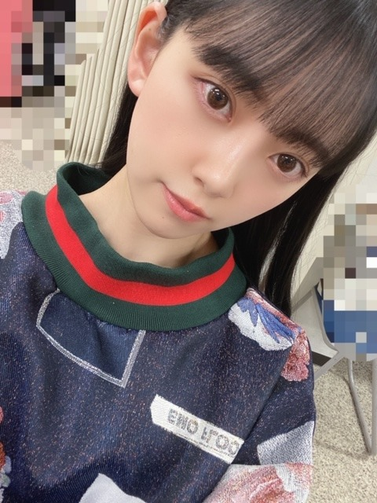

2020/0429Wed空が綺麗です
ぎりぎり、こんにちは
私は
起きてすぐカーテンを開けて
天気を確認します
そして空を見ます
今日の空は凄く綺麗でしたね
夜も窓を開けて
夜風に当たりながらボーっとしてます
ひたすらボーっと

髪色も抜けてきてすっかり茶色ですし
早くトリートメントとカラーをしに
美容院へ行きたいです
あとずっと食べてしまってます...
気をつけないと
最近は餃子と生ハムにハマってます
あと炭水化物も好きなので困ってます
野菜中心生活にまた戻さなきゃ
頑張ります
ᕦ(ò_óˇ)ᕤ


ロングが好きって言ってくださる方もいて
嬉しかったです!
いつかまたやれたらいいな
でもいまはショートボブが気に入ってます☺︎


ギリギリ結べる長さなんだっ
写真集についてのお知らせ、
また近々出ると思います!
新しい企画も用意しているので
公式Twitter
@horimiona2nd
公式Instagram
@horimiona_2nd
のほうをチェックお願いします☺︎
公式Twitterの方は
信頼おける写真集チームのスタッフさんに
全てお任せしていて
公式Instagramの方はストーリーや投稿を
私自身でやらせていただいています!
発売まで1か月を切りましたが
たくさんの方に楽しんでいただけたらいいなぁ✨
乃木坂46の堀未央奈として
自信を持ってみなさんに見ていただけるような
素敵な一冊となっていますので
5月27日まで、お楽しみに☺︎
ポスターやポストカードも
店舗ごとに違うので要チェックです♩
じゃあねっ
2020/04/29 16:30


コメント(448)
最近はみおなのブログを楽しみに毎日生きてます。かわいいよー！
ただショートヘアーだとアレンジが出来ないのかもね
ブログも全部見てますよ、更新の回数はダントツに
多いもんね、3密のせいでみんな家にいる時間が多くなったから、楽しみの１つですよ。
まいやんの卒業ライブが延期です
でもちょっとだけ嬉しい気持ちでもあります。
掘ちゃんの写真集も楽しみだ。
写真集めっちゃ楽しみ！
僕も生ハムめちゃめちゃ好き
未央奈も大好き
色んなお写真ありがとう！全部めっちゃ可愛いです♡
ロングもショートもどっちも可愛い、、、
写真集楽しみにしてます！
今色々大変だけど写真集のためにがんばります。
いつもありがとう、次のブログもたのしみにしてるね！
写真集楽しみー！！( ◜ω◝ )
コロナが終息したら、握手会、ライブで会いたいです！
自分も朝起きてカーテンを開けて天気を確認して空を見るよ♪今日の空は本当に綺麗だったね(*^^*)夜風も気持ちいいよね(о´∀`о)髪色茶色だね。早く美容室とか行けるようになりたいよね。自分も色々行きたいお店とかあるから辛いよね。この前餃子作ったよ！餃子と生ハム美味しいよね♪凄く分かるよ(≧∇≦)自分も炭水化物好きだから凄く分かるよ(^_^;)未央奈ちゃんのロングもショートボブもどっちも好きだから自分は嬉しいよ♪どの髪型も可愛いくて大好きだよ♪
写真集のお知らせと企画凄く楽しみ！早く発売日になってほしいよ(#^.^#)ポスターもポストカードも全部欲しいよ(о´∀`о)また、ブログの更新楽しみにしてるね♪未央奈ちゃん大好きだよ♪
じゃあね♪堀 未央奈神推し秀喜より！(≧∇≦)
体調は大丈夫？こちらは全然大丈夫です！
どの髪型も似合っていいと思う！
写真集予約した！とても楽しみ
未央奈好き！
あ、絶対買います またメイク動画インスタにあげてくれたら嬉しいな
ありがとう
どれも似合うけど
短いのが好きだっ
綺麗な空だったね。
天気が良いと心まで明るくなれる！(^-^)
ひたすらボーっと。笑
風邪ひかないようにね、ボーちゃんさん。
ほんとだ。髪色。
ウイルスとは長期戦になりそうだよね。。
いっぱい食べるみおちゃんすきー！笑
餃子と生ハムおいしーよね。
がんばって！野菜中心生活。
応援してるっ！
ᕦ(ò_óˇ)ᕤ
笑
あ！おしゃれな服♪
ロングもショートボブもすき。
みおちゃんはいろんな髪型似合うんだね☺︎☺︎
ヘアアレンジも素敵✨
写真集のお知らせ！待ってます！
新しい企画！！なんだろう。
発売まで1ヶ月かぁ。わくわく。
うん！素敵な一冊を魅せてくださいっ！
た〜のしみ〜☺️
チェックしてまする。
おっけ、またねっ！
これからフロムヘルっていう映画観るぅ〜♪
ちょっと怖そう。では！
JK1のひよこです
可愛すぎる未央奈ちゃん
写真集買うね
美容院私も行きたいなぁ、髪めっちゃ伸びちゃった
ついつい、食べちゃうよねー
握手会行きたいです
ひよこの名札つけてくので覚えててくれたら嬉しいです
《質問》
①どんな髪型の女子が好き？
②ひよこ好きー？
③JKデビューまでにやるべなきことは？
④好きなアニメは？そのアニメの推しキャラは？
アレンジや見せ方も上手いんだよね
空を見る話もみおなの自然が好きな所出てる◎
写真集の情報もチェックしてるよー
楽しみじゃ！
ダイエットは明日からね！
了解です笑
ぼーっとし過ぎて
風邪ひかないでね
特に喉弱いんだから気を付けてﾈ(￣0￣)/
腹へった～！
堀ちゃんはどんな髪型でも似合うからほんと羨ましい〜よ
体調には気をつけてね！
でもロング未央奈さんも好きだなぁ笑
ブログ更新ありがとう！
ロングの堀ちゃんもいいけど
やっぱりショートボブですね！
今が1番いいよ！
お肉とか炭水化物
いっぱい食べても、
野菜中心の生活にすぐに
切り替えて行けるとこがすごいね！
さすが！
写真集の情報公開も
楽しみにしてるよ！
発売も楽しみ！
次回の更新も楽しみにしてるよ！
では！
おやすみおな〜！！
岐阜は6日間連続でコロナの感染者が0人です。みおなちゃんも体に気をつけて頑張ってください！
最近は特に可愛くなっていて、推しで良かったと思うと同時にどこまでも努力し続ける姿を尊敬します！
ずっと大好きやし、ずっと推すで頑張って！
今、まさに必要な策。
まずは換気が一番大事
どんな髪型でも似合っていますね！
写真集小遣いを貯めて買いたいなーっとおもってます！
Q トレーニングする上で一番意識していることって
何ですか？ 教えてください！
体調には気をつけてください！
次のブログ更新も楽しみに待っています！
未央奈ちゃんのサラサラの髪の毛とても憧れです(♡)
未央奈ちゃんに質問です！
チアダンス知ってますか、、、、？
今日も可愛い
ブログ更新ありがとう
写真集発売まで1ヶ月切ったね
楽しみにしてるね！
次の更新も待ってるね！
ブログ更新ありがとう!
未央奈ちゃんと同じ空を見ていると思うと嬉しくなります！
過去のＭＶ見るたび大人になったなと思います。
あまり行動できない時こそやれることがあると思います！
是非充実した日々をお過ごしください!
次のブログ待っています。
ずっと応援しているよ☺️☺️
生ハム美味しいよね！
でも、食べ過ぎたらなんか変な感じになりません？
私も炭水化物ばかりの食生活なので野菜中心に戻さなきゃです。
写真集楽しみ♪
もるもっと
食べるの好きやとすぐ食べてしまうよね
朝の日差しが気持ち良くて好きです
次のブログも楽しみにしてます
早くコロナ治ってメンバーとの未央奈みたいー
起きてすぐ自然な風にうたれると気持ちいいですよね！自分も生ハム大好きです！生ハムサラダとかおいしいですよ！
ボブもロングもどっちも似合ってると思います！あと、カチューシャも（笑）
写真集待ち遠しいです！
次のブログも楽しみにしてます！
今日はいい天気でしたねー
私も最近つい食べちゃうんです
野菜中心の生活を心掛けなきゃ
未央奈さんはボブもロングも似合うからどっちも大好きです
もっといろんな未央奈さんを見てみたいです
未央奈さんに会いたいなぁ
お身体に気をつけてください
写真集すごく楽しみです
それでは
○Through the night(happy ver) /shin Giwon Piano(IU music piano collection)
可愛くアレンジされているのですが、凄く切なさがあって個人的に一番好きでした。
○Blueming / shin Giwon Piano
○bbibbi /shin Giwon Piano
○Twenty-three / shin Giwon Piano
○feel special / shin Giwon Piano
○pshyco / shin Giwon Piano
○fiesta / shin Giwon Piano (jazzぽくなっています)
未央奈ちゃんの好きなアレンジがございましたら嬉しいです！未央奈ちゃんと未央奈ちゃんの大切な方が幸せでありますように。
コメントする